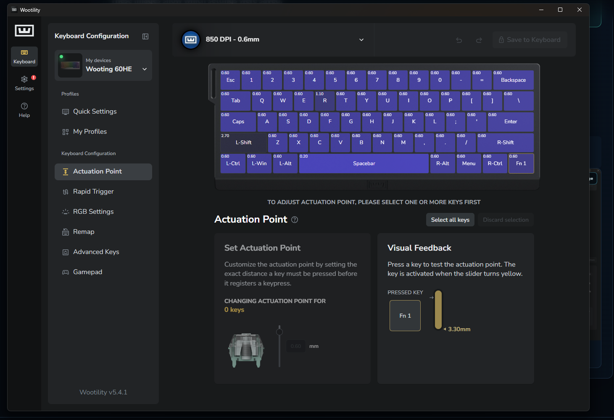
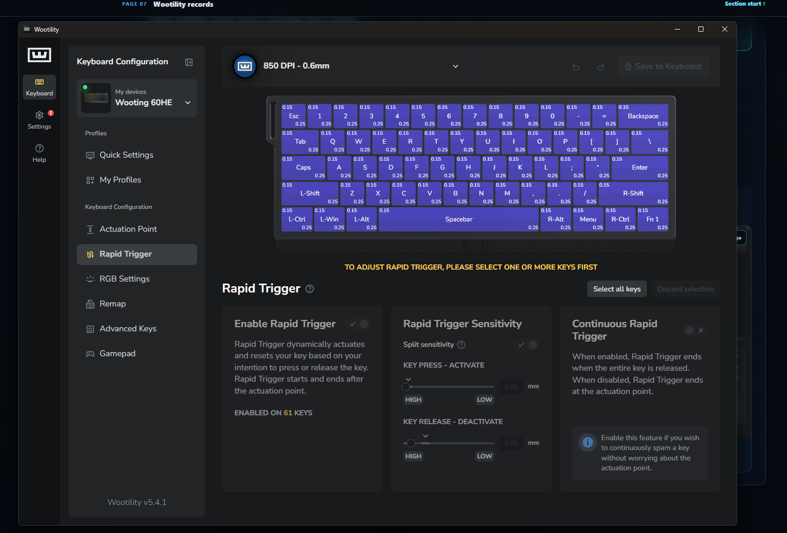

This is the complete configuration I currently use as one profile: the Wooting 60HE with Gateron Magnetic Jade switches, FreeStyle GunZ options, sensitivity, binds, and crosshair shown in the captures below. These values have only been tested in FreeStyle GunZ.
Current Rapid Trigger result
0.60 mm actuation · 0.15 mm RT A · 0.25 mm RT D
Personal result, not a universal preset. I first reached a repeatable result at 1.20 mm, moved to 1.00 mm for more consistency, then tested 0.60 mm for longer high-pace sessions. In my current FreeStyle GunZ testing, 0.60 mm kept the response I wanted with less effort near the top of the key. RT A stayed at 0.15 mm and RT D settled at 0.25 mm.
Actuation0.60 mm
RT A · Activate0.15 mm
RT D · Deactivate0.25 mm

Current actuation profile. Regular keys use 0.60 mm; the screenshot also preserves the visible key exceptions.

Current Rapid Trigger profile. Split sensitivity uses 0.15 mm Activate and 0.25 mm Deactivate.
Current FreeStyle GunZ baseline
Values I hold fixed while testing.
ClientFreeStyle GunZ
Keyboard and switchesWooting 60HE · Gateron Magnetic Jade
DisplayFullscreen · 1280 × 1024 · 32 bpp
Maximum FPS250 · game-logic limit enabled
Field of view70
Camera distance22
Mouse DPI850
GunZ sensitivity2702
Measured turn distance13.8976 cm / 360°
CrosshairCustom 1 · size 1.00 · #FFFF00
Why these are listed together: they are the game and mouse conditions behind this personal Rapid Trigger result. They are not required values for another player.